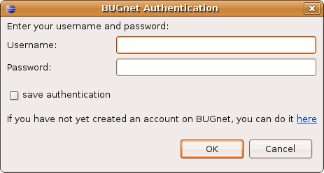

Interacting with BUGnet
Contents |
BUGnet View
The BUGnet view in the Dragonfly SDK allows you to interact with the BUG community on BUGnet. You can browse, upload, or download applications via our Web Service interface that connects to: https://api.buglabs.net
You can:
- Left click on any application to bring up the BUGnet application details page in a Physical Editor window. From this page you can click the 'Download Latest Version to SDK' link to download the application.
- Right click on any application and select 'Import to Dragonfly SDK' to download the application.
- Click the refresh button to refresh the BUGnet view.
- Click the 'Search Applications' button to load the Community Applications page in a Physical Editor window. On this page you can use the full text application Search box, the 'Browse by Categories' or 'Maturity' drop downs, or the 'Search by Required Modules' function.
- Do a full text search for all applications, your applications, or applications for a connected BUG in the BUGnet view search box.
If you accidentally close this view you can go to Window > Show View > Other > Dragonfly > BUGnet to display it again.
BUGnet Preferences
A number of settings for the BUGnet view can be accessed via the Eclipse Preferences. Go to: Window > Preferences > BUGnet (On Mac: Eclipse > Preferences > BUGnet)
- Enable BUGnet - checkbox that allows you to go into offline mode.
- Server Name - The web service URL to buglabs.net.
- Number of Applications to display - Accepts 0 to 100. This changes the number of applications displayed in the My Apps and Top Apps sections.
- Clear Authentication Data - Clears saved BUGnet Authentication and logs you out of your current session.
Using the BUGnet View
The BUGnet view contains a login to BUGnet link, a search filter drop-down which defaults to All Applications, a search box, and a list of applications that can be downloaded to the SDK.
Login to BUGnet
Click the "login to BUGnet" link to open the BUGnet Authentication window. After a successful login, the application list will refresh, showing both public applications and the private applications that you have permission to view.
Click the log-in link to bring up the BUGnet Authentication window.

You can enter an existing BUGnet Username and Password and click OK (Optional: check the 'save authentication' checkbox). If you don't have BUGnet account you can click the here link to create one.
Search Filter
The Search Filter has the following choices:
- All Applications: Shows all applications on BUGnet that match the search terms. If the search box is empty, it will return all applications.
- My Applications: Shows all applications for which you are an administrator or collaborator. If you select this filter prior to logging in, you will be presented with the BUGnet Authentication window and asked to log in.
- Applications for My BUGs: If you have a real or virtual BUG connected to the SDK, they will appear as a list here. If you have no BUGs connected, then you will not see this filter. This filter allows you to search only for applications that will run on the connected BUG chosen, based on the modules attached to the connected BUG.
Search Box
Entering a search term in the Search Box and clicking "Search" will return a list of applications based on that search term and the above filter. The search terms can be cleared with the 'X' button. Searching without a search term will return all results based on the above filter.
Application List
This list shows the search results based on the Search Box and Search Filter above. The list returns a default number of results, which can be set in the BUGnet Preferences. At the bottom of the list, the number of results shown is displayed. If the number of results available is greater than the number of results shown, a link to "View more" is available. Clicking this link will add more applications to the current results list.